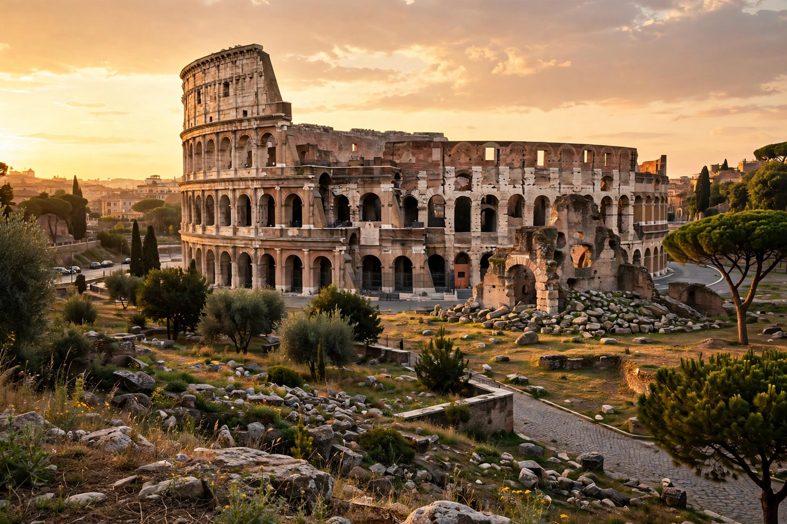

| Colosseum | |
|---|---|
 | |
| Location | Regio III Isis et Serapis, Rome, Italy |
| Built | AD 70–80 |
| Built for | Vespasian, Titus |
| Type | Amphitheatre |
| Length | 189 m (615 ft) |
| Width | 156 m (510 ft) |
| Height | 48 m (157 ft) |
The Colosseum (also known as the Flavian Amphitheatre) is an elliptical amphitheatre in the centre of the city of Rome, Italy, just east of the Roman Forum. It is the largest ancient amphitheatre ever built, and is still the largest standing amphitheatre in the world, despite its age. Construction began under the emperor Vespasian in AD 72 and was completed in AD 80 under his successor and heir, Titus. Further modifications were made during the reign of Domitian.
The Colosseum was built on the site of Nero's vast palace complex, the Domus Aurea, as a gesture by the new Flavian dynasty to return the land to the people of Rome. Capable of holding an estimated 50,000 to 80,000 spectators, it was used for gladiatorial contests and public spectacles including mock sea battles, animal hunts, executions, re-enactments of famous battles, and dramas based on Roman mythology.
The building ceased to be used for entertainment in the early medieval era. It was later reused for such purposes as housing, workshops, quarters for a religious order, a fortress, a quarry, and a Christian shrine. Earthquakes and stone-robbers caused extensive damage, and the iconic broken profile of the building results from the collapse of the outer wall's southern side in the earthquake of 1349.
The Colosseum is an elliptical structure 189 metres long and 156 metres wide, with a base area of about 24,000 square metres. The outer wall rises over 48 metres. The arena itself was 83 metres by 48 metres, originally with a wooden floor covered by sand (the Latin word for sand is harena, origin of "arena"), above a complex underground structure called the hypogeum, where gladiators and animals were held before contests began.
The Colosseum is a major tourist attraction, receiving millions of visitors each year. It is depicted on the Italian version of the five euro cent coin and was named one of the New 7 Wonders of the World in 2007. It is closely associated with the Roman Catholic Church, and the Pope leads a torch-lit Way of the Cross procession there each Good Friday.